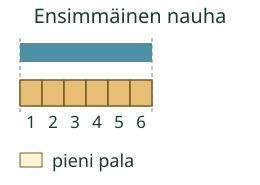
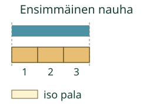

Aava kertoo nauhan pituuden Loikalle. Mitä luvun lisäksi pitää kertoa?
Luku kertoo palojen määrän
Tavoite: Kerron mittauksen tuloksen luvulla ja käytetyllä mittapalalla.
Samanlaiset palat ovat peräkkäin. Ne yltävät nauhan alusta loppuun ilman rakoja tai päällekkäisyyksiä.

Sama nauha, toinen mittapala
Mieti: Muuttuuko nauha, kun vaihdat isoon palaan?

Pelkkä luku ei siis riitä vertailuun. 6 pientä palaa ja 3 isoa palaa voivat kertoa saman nauhan pituuden.
Kirjaa mittaus
Valitse nauha ja mittapala. Kaikki palat näkyvät. Kirjoita niiden määrä.
Vertaa kahta uutta nauhaa
Lyhyempi nauha on 4 pientä palaa. Toinen on 7 samankokoista pientä palaa. Seitsemän palan nauha on pidempi. Voit verrata lukuja näin, koska mittapalat ovat samanlaisia.
Lopuksi: Mitä kerrot luvun lisäksi, kun kerrot mittauksesta?
Opettajalle ja ilman ruutua
Luokat 1–2. Kanoninen procedure/atomic, vaadittu M-NUM-03. M-MEAS-01 on vahva tuki, ei pakollinen lisäportti: samanlaiset palat ja koko pituuden peittäminen avataan tässä. Mittapalat on annettu; niiden nimeämistä tai pakollisia laskentapainalluksia ei kysytä. Aikuinen voi lukea tekstit.
Leikkaa samanlaisia paperiliuskoja. Mittaa oikea nauha niiden avulla ja kirjoita palojen määrä sekä käytetty pala. Kokeile sitten kaksi kertaa niin pitkää paperipalaa ja vertaa samaa nauhaa. Fyysisen asettelun ja kirjauksen voi havainnoida erikseen.
Sivun kuvat ovat malleja, eivät näytöltä mitattavia senttimetrejä. Jokainen tuettu mittapala täyttää koko mallin pituuden; parittoman pituuden nauhoilla tarjotaan vain pientä palaa, eikä osapaloja tai desimaaleja vaadita. Valinnainen laskuapu ei ole itsenäisen laskemisen näyttöä. Tarkistus koskee annetun mallin tuloksen kirjaamista, ei fyysistä mittaamista, mittalaitteen käyttöä tai pysyvää osaamista. Ei henkilöhistoriaa tai formaalia pelihallintaa.